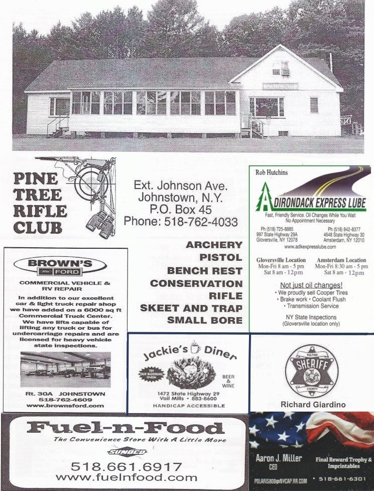
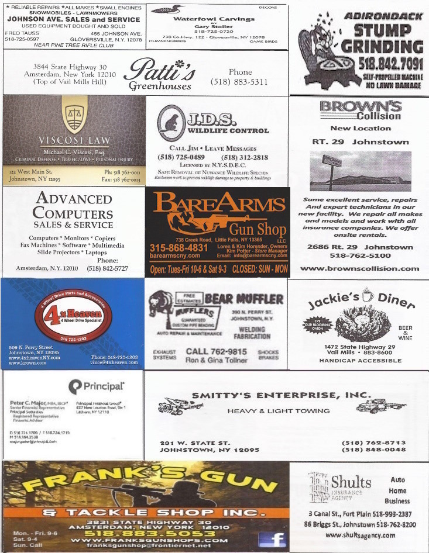
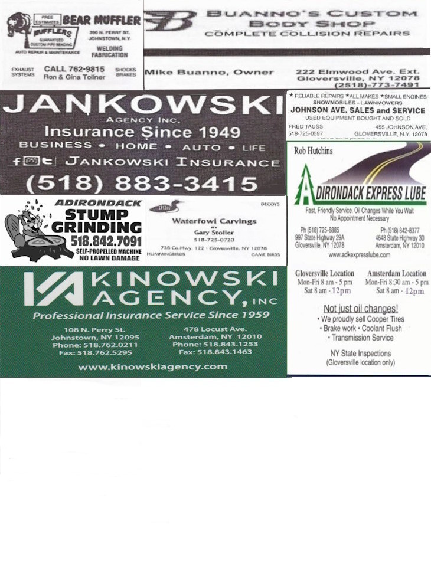

|
December 2025
Seasons Greeting's one and all! This is my last communications to you as President. Time to semi retire again. The past two years have gone by rather quickly to be sure. Together we have maintained as well as improved many areas of our great club. The Wednesday crew, the range/target crews long gun crews, handgun crew and 3D archery! December 17th, we held our annual Prime Rib Dinner organized by VP Rick O'Dell who did half of the cooking, the other half by Ed Sturgess (these two did most of the cooking for dinners the past two years) along with a group of again Volunteers. Another great meal enjoyed by all! Could list all the great events activities and functions held the past two years, it would take up many many pages for sure. The list of volunteers is really not all that long - I do wish to thank each and every one for all they have done, will try to do so in person as well.
A very special thanks to the 2024-2025 Officers, they made my position a whole lot easier.
Your 2026 2027 slate of officers are:
Steven H Riach riachsh@outlook.com BE SAFE and ENJOY hope to see you at our club |